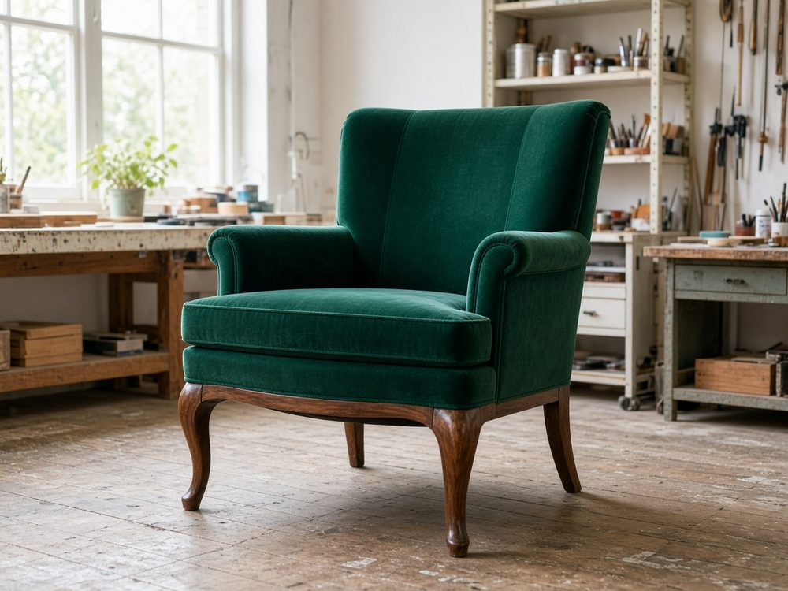
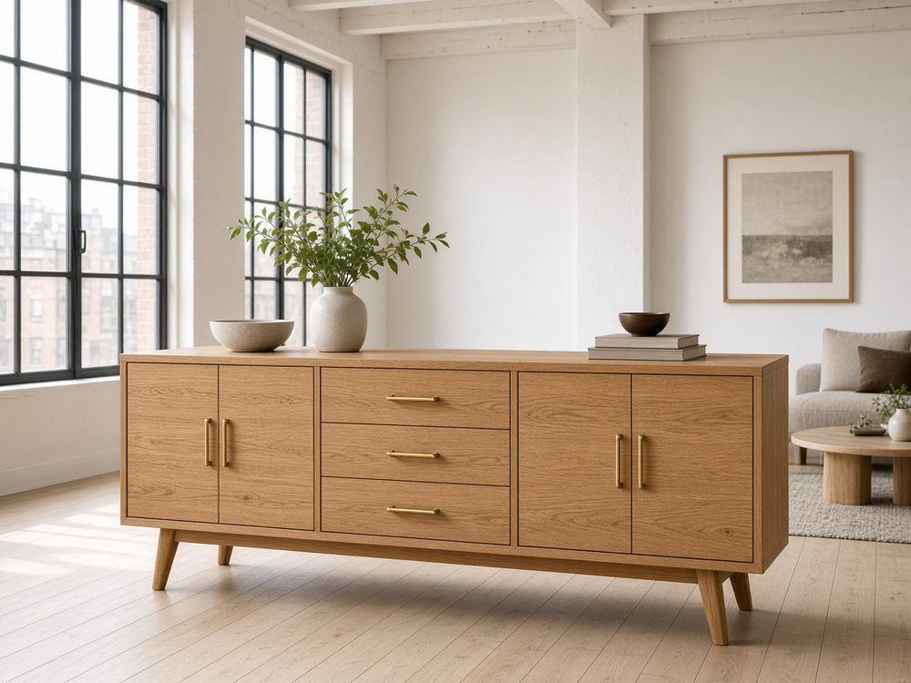
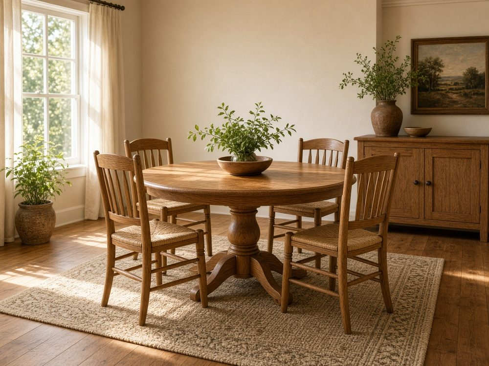
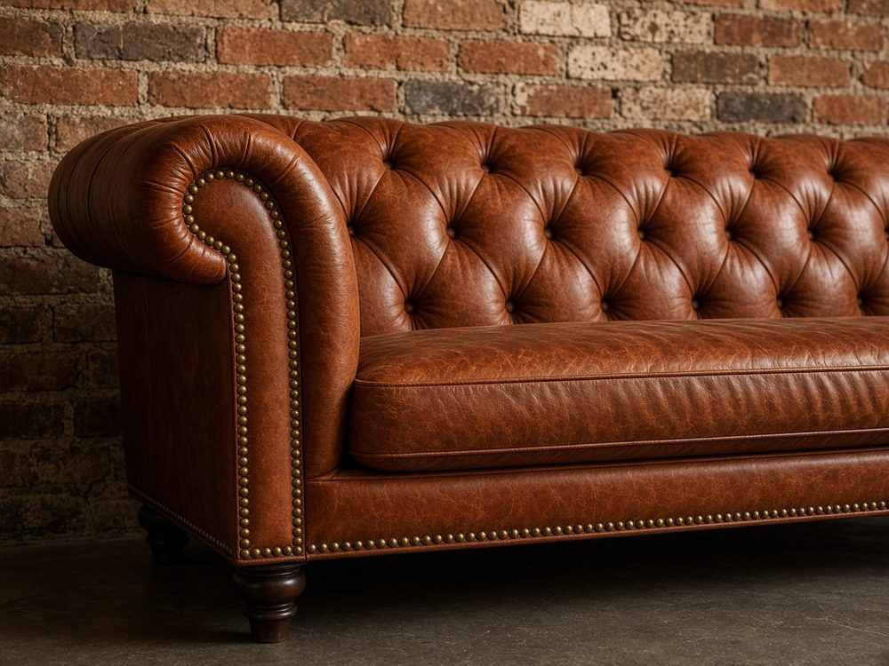
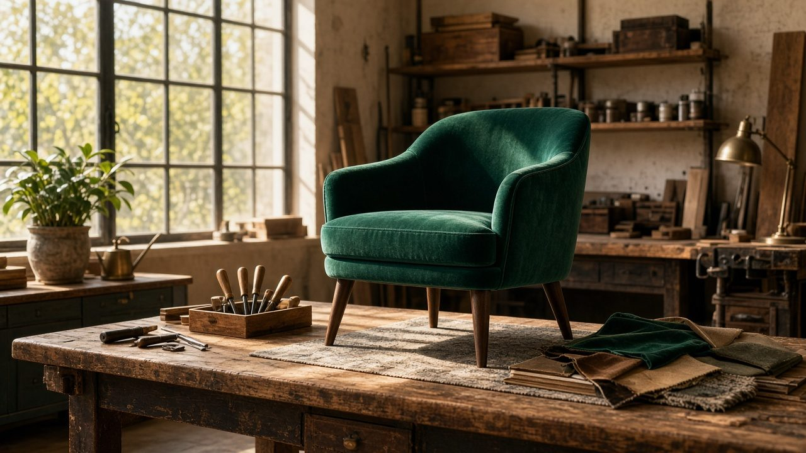
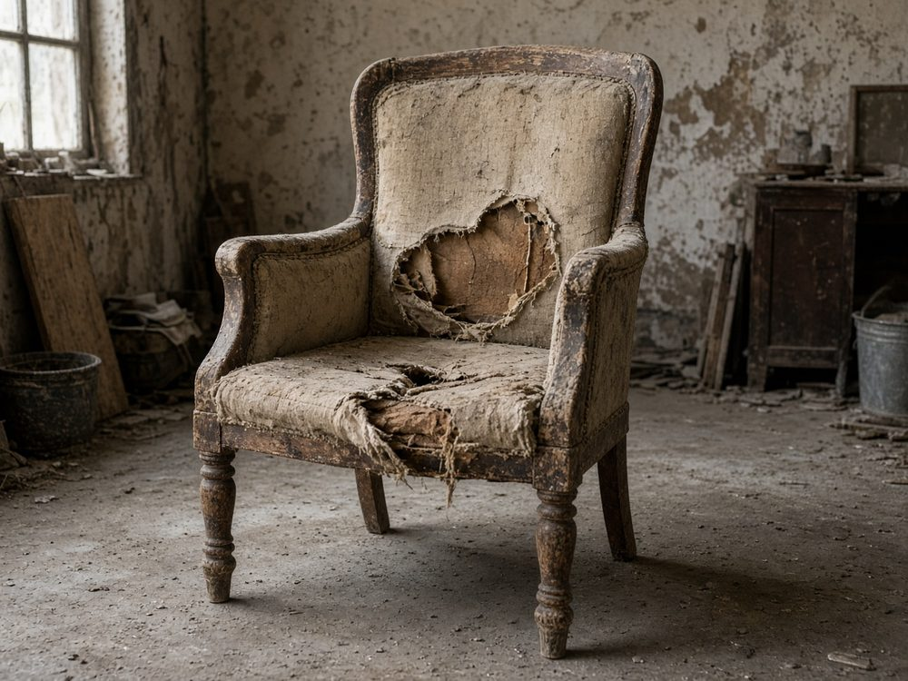

Кресло 1960-х
Бархат, орех, новый наполнитель.
Несколько восстановленных предметов — демо-витрина.

Бархат, орех, новый наполнитель.

Шпон дуба, латунь, масло.

Стол и стулья, восстановленный каркас.

Кожа, капитоне, латунные гвозди.

Где собираем и фотографируем.

Оценка всегда по фото и осмотру.